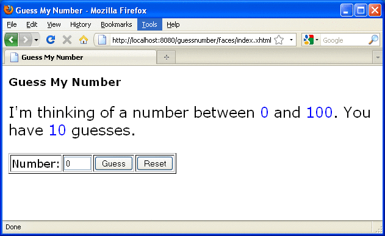
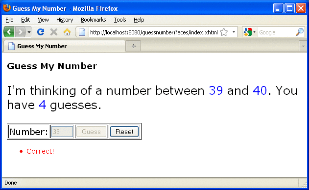

The guessnumber CDI Example
The guessnumber example is somewhat more complex than the simplegreeting example. It illustrates the use of producer methods and of session and application scope.
The example is a game in which you try to guess a number in fewer than 10 attempts. It is similar to the guessNumber example described in Chapter 5, Introduction to Facelets, except that you can keep guessing until you get the right answer or until you use up your 10 attempts.
The example includes four source files, a Facelets page and template, and configuration files. The configuration files and the template are the same as those used for the simplegreeting example.
The guessnumber Source Files
The four source files for the guessnumber example include the following:
The @MaxNumber qualifier interface
The @Random qualifier interface
The Generator managed bean, which defines producer methods
The UserNumberBean managed bean
The source files are located in the following directory:
tut-install/examples/cdi/guessnumber/src/java/guessnumber
The @MaxNumber and @Random Qualifier Interfaces
The @MaxNumber qualifier interface is defined as follows.
package guessnumber;
import static java.lang.annotation.ElementType.FIELD;
import static java.lang.annotation.ElementType.METHOD;
import static java.lang.annotation.ElementType.PARAMETER;
import static java.lang.annotation.ElementType.TYPE;
import static java.lang.annotation.RetentionPolicy.RUNTIME;
import java.lang.annotation.Documented;
import java.lang.annotation.Retention;
import java.lang.annotation.Target;
import javax.inject.Qualifier;
@Target( { TYPE, METHOD, PARAMETER, FIELD })
@Retention(RUNTIME)
@Documented
@Qualifier
public @interface MaxNumber {
}The @Random qualifier interface is defined as follows.
package guessnumber;
import static java.lang.annotation.ElementType.FIELD;
import static java.lang.annotation.ElementType.METHOD;
import static java.lang.annotation.ElementType.PARAMETER;
import static java.lang.annotation.ElementType.TYPE;
import static java.lang.annotation.RetentionPolicy.RUNTIME;
import java.lang.annotation.Documented;
import java.lang.annotation.Retention;
import java.lang.annotation.Target;
import javax.inject.Qualifier;
@Target( { TYPE, METHOD, PARAMETER, FIELD })
@Retention(RUNTIME)
@Documented
@Qualifier
public @interface Random {
}
The Generator Managed Bean
The Generator managed bean contains the two producer methods for the application. The bean has the @ApplicationScoped annotation to specify that its context extends for the duration of the user's interaction with the application.
package guessnumber;
import java.io.Serializable;
import javax.enterprise.context.ApplicationScoped;
import javax.enterprise.inject.Produces;
@ApplicationScoped
public class Generator implements Serializable {
private static final long serialVersionUID = -7213673465118041882L;
private java.util.Random random =
new java.util.Random( System.currentTimeMillis() );
private int maxNumber = 100;
java.util.Random getRandom() {
return random;
}
@Produces @Random int next() {
return getRandom().nextInt(maxNumber);
}
@Produces @MaxNumber int getMaxNumber() {
return maxNumber;
}
}
The UserNumberBean Managed Bean
The UserNumberBean managed bean, the backing bean for the JavaServer Faces application, provides the basic logic for the game. It implements setter and getter methods for the bean fields and injects the two qualifier objects. It provides a reset method that allows you to begin a new game after you complete one. It also provides a check method that determines whether the user has guessed the number, and a validateNumberRange method that determines whether the user's input is correct.
package guessnumber;
import java.io.Serializable;
import javax.annotation.PostConstruct;
import javax.enterprise.context.SessionScoped;
import javax.enterprise.inject.Instance;
import javax.inject.Inject;
import javax.inject.Named;
import javax.faces.application.FacesMessage;
import javax.faces.component.UIComponent;
import javax.faces.component.UIInput;
import javax.faces.context.FacesContext;
@Named
@SessionScoped
public class UserNumberBean implements Serializable {
private static final long serialVersionUID = 1L;
private int number;
private Integer userNumber;
private int minimum;
private int remainingGuesses;
@MaxNumber
@Inject
private int maxNumber;
private int maximum;
@Random
@Inject
Instance<Integer> randomInt;
public UserNumberBean() {
}
public int getNumber() {
return number;
}
public void setUserNumber(Integer user_number) {
userNumber = user_number;
}
public Integer getUserNumber() {
return userNumber;
}
public int getMaximum() {
return (this.maximum);
}
public void setMaximum(int maximum) {
this.maximum = maximum;
}
public int getMinimum() {
return (this.minimum);
}
public void setMinimum(int minimum) {
this.minimum = minimum;
}
public int getRemainingGuesses() {
return remainingGuesses;
}
public String check() throws InterruptedException {
if (userNumber > number) {
maximum = userNumber - 1;
}
if (userNumber < number) {
minimum = userNumber + 1;
}
if (userNumber == number) {
FacesContext.getCurrentInstance().addMessage(null,
new FacesMessage("Correct!"));
}
remainingGuesses--;
return null;
}
@PostConstruct
public void reset() {
this.minimum = 0;
this.userNumber = 0;
this.remainingGuesses = 10;
this.maximum = maxNumber;
this.number = randomInt.get();
}
public void validateNumberRange(FacesContext context, UIComponent toValidate,
Object value) {
if (remainingGuesses <= 0) {
FacesMessage message = new FacesMessage("No guesses left!");
context.addMessage(toValidate.getClientId(context), message);
((UIInput) toValidate).setValid(false);
return;
}
int input = (Integer) value;
if (input < minimum || input > maximum) {
((UIInput) toValidate).setValid(false);
FacesMessage message = new FacesMessage("Invalid guess");
context.addMessage(toValidate.getClientId(context), message);
}
}
}
The Facelets Page
This example uses the same template that the simplegreeting example uses. The index.xhtml file, however, is more complex.
<?xml version='1.0' encoding='UTF-8' ?>
<!DOCTYPE html PUBLIC "-//W3C//DTD XHTML 1.0 Transitional//EN"
"http://www.w3.org/TR/xhtml1/DTD/xhtml1-transitional.dtd">
<html xmlns="http://www.w3.org/1999/xhtml"
xmlns:ui="http://java.sun.com/jsf/facelets"
xmlns:h="http://java.sun.com/jsf/html"
xmlns:f="http://java.sun.com/jsf/core">
<ui:composition template="/template.xhtml">
<ui:define name="title">Guess My Number</ui:define>
<ui:define name="head">Guess My Number</ui:define>
<ui:define name="content">
<h:form id="GuessMain">
<div style="color: black; font-size: 24px;">
<p>I'm thinking of a number between
<span style="color: blue">#{userNumberBean.minimum}</span> and
<span style="color: blue">#{userNumberBean.maximum}</span>. You have
<span style="color: blue">#{userNumberBean.remainingGuesses}</span>
guesses.</p>
</div>
<h:panelGrid border="0" columns="5" style="font-size: 18px;">
Number:
<h:inputText id="inputGuess"
value="#{userNumberBean.userNumber}"
required="true" size="3"
disabled="#{userNumberBean.number eq userNumberBean.userNumber}"
validator="#{userNumberBean.validateNumberRange}">
</h:inputText>
<h:commandButton id="GuessButton" value="Guess"
action="#{userNumberBean.check}"
disabled="#{userNumberBean.number eq userNumberBean.userNumber}"/>
<h:commandButton id="RestartButton" value="Reset"
action="#{userNumberBean.reset}"
immediate="true" />
<h:outputText id="Higher" value="Higher!"
rendered="#{userNumberBean.number gt userNumberBean.userNumber and userNumberBean.userNumber ne 0}"
style="color: red"/>
<h:outputText id="Lower" value="Lower!"
rendered="#{userNumberBean.number lt userNumberBean.userNumber and userNumberBean.userNumber ne 0}"
style="color: red"/>
</h:panelGrid>
<div style="color: red; font-size: 14px;">
<h:messages id="messages" globalOnly="false"/>
</div>
</h:form>
</ui:define>
</ui:composition>
</html>The Facelets page presents the user with the minimum and maximum values and the number of guesses remaining. The user's interaction with the game takes place within the panelGrid table, which contains an input field, Guess and Reset buttons, and a text field that appears if the guess is higher or lower than the correct number. Every time the user clicks the Guess button, the userNumberBean.check method is called to reset the maximum or minimum value or, if the guess is correct, to generate a FacesMessage to that effect. The userNumberBean.validateNumberRange method determines whether each guess is valid.
Building, Packaging, Deploying, and Running the guessnumber CDI Example
You can build, package, deploy, and run the guessnumber application using either NetBeans IDE or the Ant tool.
To Build, Package, and Deploy the guessnumber Example Using NetBeans IDE
To build, package, and deploy the guessnumber example to the GlassFish Server using NetBeans IDE, follow these steps.
This procedure builds the application into the tut-install/examples/cdi/guessnumber/build/web directory and deploys the contents of this directory to the GlassFish Server.
- In NetBeans IDE, select File→Open Project.
- In the Open Project dialog, navigate to tut-install/examples/cdi/.
- Select the guessnumber folder.
- Select the Open as Main Project check box.
- Click Open Project.
- In the Projects tab, right-click the guessnumber project and select Deploy.
To Build, Package, and Deploy the guessnumber Example Using Ant
To build, package, and deploy the guessnumber example to the GlassFish Server using Ant, follow these steps.
This procedure builds the application into the tut-install/examples/cdi/guessnumber/build/web directory and deploys the contents of this directory to the GlassFish Server.
This procedure builds and packages the application into guessnumber.war, located in tut-install/examples/cdi/guessnumber/dist/, and deploys this WAR file to the GlassFish Server.
- In a terminal window, go to this directory:
tut-install/examples/cdi/guessnumber/
- Type the following command:
ant
This command calls the default target, which builds and packages the application into a WAR file, guessnumber.war, located in the dist directory.
- Type the following command:
ant deploy
The guessnumber.war file will be deployed to the GlassFish Server.
To Run the guessnumber Example
To run the guessnumber, follow these steps.
- In a web browser, type the following URL:
http://localhost:8080/guessnumber
The Guess My Number page opens, as shown in Figure 19-2.
Figure 19-2 Guess My Number Example
 - Type a number in the Number text field, then click Guess.
The minimum and maximum values are modified, along with the remaining number of guesses.
- Keep guessing numbers until you get the right answer or run out of
guesses.
If you get the right answer, the input field and Guess button are grayed out, as shown in Figure 19-3.
Figure 19-3 Guess My Number at End of Game
 - Click the Reset button to play the game again with a new random number.